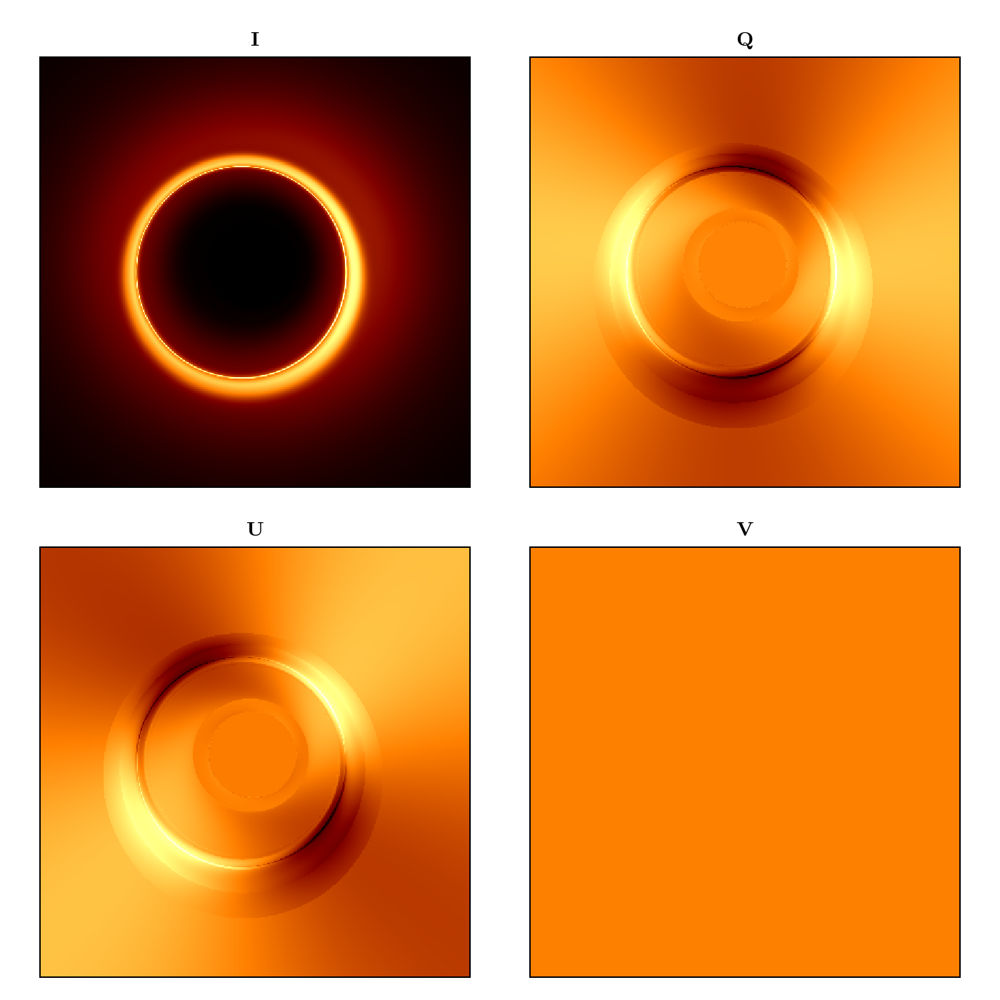

Creating a Custom Dual Cone Model
In this example, we will raytrace the region around a Kerr blackhole as seen by an observer stationed at infinity. We will show the emission coordinates of the n=0 (direct) and n=1 (indirect) photons as they are emitted from the source, at a fixed inclination angle from the blackhole's spin axis.
First, let's import Krang and CairoMakie for plotting.
#using Revise
using Krang
using CairoMakie
curr_theme = Theme(
Axis = (
xticksvisible = false,
xticklabelsvisible = false,
yticksvisible = false,
yticklabelsvisible = false,
),
)
set_theme!(merge!(curr_theme, theme_latexfonts()))We will use a 0.99 spin Kerr blackhole viewed by an assymptotic observer at an inclination angle of θo=π/4. A region spanned by radii between the horizon and 20M at varying inclinations will be raytraced onto the 20Mx20M screen of the observer.
metric = Krang.Kerr(-0.94);
θo = 17 * π / 180;
sze = 400;
rmin = Krang.horizon(metric)
rmax = 10.0;
ρmax = 10.0;
χ = 2.7242920822576653;
η1 = 0.01817958773540323;
ι = 1.0113763707982746;
βv = 0.3096525555378556;
σ = -0.34430247937749187;
function profile(r)
R = 5.59261856012756
p1 = 0.158968560099307
p2 = 4.192568509151882
return (r/R)^p1/(1+(r/R)^(p1+p2))
endprofile (generic function with 1 method)Create the material
camera = Krang.IntensityCamera(metric, θo, -ρmax, ρmax, -ρmax, ρmax, sze);
η2 = π-η1
magfield1 = Krang.SVector(sin(ι)*cos(η1), sin(ι)*sin(η1), cos(ι));
magfield2 = Krang.SVector(sin(ι)*cos(η2), sin(ι)*sin(η2), cos(ι));
vel = Krang.SVector(βv, (π/2), χ);
material = Krang.ElectronSynchrotronPowerLawPolarization();
θs = (75 * π / 180)
geometry1 = Krang.ConeGeometry((θs), (magfield1, vel, (0,1,2), profile, σ))
geometry2 = Krang.ConeGeometry((π-θs), (magfield2, vel, (0,1,2), profile, σ))
geometry = geometry1 ⊕ geometry2
mesh = Krang.Mesh(geometry, material)
ivals, qvals, uvals, vvals = (Matrix{Float64}(undef, sze, sze) for _ in 1:4)
@Threads.threads for I in CartesianIndices(camera.screen.pixels)
ivals[I], qvals[I], uvals[I], vvals[I] = mesh.material(camera.screen.pixels[I], mesh.geometry)
end
fig = Figure(resolution=(700, 700));
ax1 = Axis(fig[1, 1], aspect=1, title="I")
ax2 = Axis(fig[1, 2], aspect=1, title="Q")
ax3 = Axis(fig[2, 1], aspect=1, title="U")
ax4 = Axis(fig[2, 2], aspect=1, title="V")
zip([ax1, ax2, ax3, ax4], [ivals, qvals, uvals, vvals]) .|> x->heatmap!(x[1], x[2], colormap=:afmhot)
save("polarization_example.png", fig)CairoMakie.Screen{IMAGE}

This page was generated using Literate.jl.